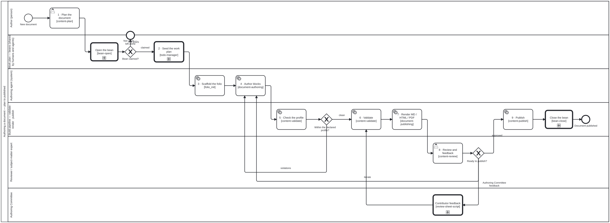

Generated from
folio-assistant-core/processes/content/authoring-a-document.bpmnbygen-processes-viz.ts— do not edit here. All processes
Authoring a document
Process_DocumentAuthoring · advisory · 12 step(s)
How a document folio — structured prose and policy guidance, with no Lean and no required TeX — is authored, built and reviewed end to end. folio-assistant — authoring a document end to end (no Lean, no required TeX).
Source of truth: this file. The SVG under docs/assets/img/workflows/ is generated
from it by bun run cat render:bpmn — never hand-edit the SVG.
The shape is the paper process minus the Lean lane and plus one step, the profile
check, which is what keeps a document folio publishable without either toolchain.

How it connects
- Called by: no call activity names this process
- Calls: Close the bean, Open the bean, Contributor feedback on a working draft
- Presented on: Documents & policy guidance — Documents & policy guidance, Writing a document — What a document folio is
- Running instances: none recorded
Lanes — who acts
| lane | role | what it does here |
|---|---|---|
| Author (person) | author | The only place a person acts before the process becomes agent- and pipeline-driven: Task_Plan sets the chapters, the blocks each needs and which statements are normative, once, before Lane_WorkPlan seeds a bean and Lane_Agent takes over every later edit, including every iteration the review and profile-check loops send back. |
| Work plan — beans (shared by humans and agents) | work-plan | Touched exactly once in this process — Task_SeedPlan turns the plan into a bean right after Task_Plan, so a resumed session or a sibling agent can pick the authoring loop up without re-deriving what was decided at the top. |
| Authoring agent (system) | authoring-agent | Task_AuthorBlocks is where every loop in this process lands — a profile violation from Lane_Build and an iterate from Lane_Reviewer both come back here — so this lane, not either gate, is what actually turns a rejection into a fixed block; Task_Scaffold runs once, before either loop exists. |
| Build pipeline — validate · render · publish | build-pipeline | Owns the one gate this process has that the paper process does not — the profile check — so nothing with a math kind, a lean field or a .lean sibling reaches Task_Validate or Task_Render pretending to be document content; everything downstream of Gateway_ProfileClean assumes that profile. |
| Reviewer / subject-matter expert | reviewer | Owns the one gate that decides publish or iterate, and is deliberately unspecialised: this process relaxes the paper process’s clinical-SME lane into whichever reviewer a given document actually binds, because no single expertise fits every document the way it does a guideline. |
| Authoring Committee | authoring-committee | The people writing the document with the editor. While it is a working draft they give feedback through the Contributor Feedback sheet, one change set per row, and each row runs Process_ContributorFeedback. |
Steps
Every one of the 12 step(s) is documented.
| step | lane | skill / sub-process | what it does |
|---|---|---|---|
1 · Plan the documentTask_Plan | Author (person) | content-plan | Scope it: chapters, the blocks each needs, which statements are normative. |
2 · Seed the work planTask_SeedPlan | Work plan — beans (shared by humans and agents) | shared step GT_SeedWorkPlantodo-manager | The plan becomes beans, so a resumed session or a sibling agent can pick it up. The run’s own bean was claimed by the Process_BeanOpen call before this step (bean m8gz), so this step only notes the seeded plan on it; the beans themselves are written with the agent’s own beans create, which no engine op performs. From here on, beans/ is the shared answer to ‘what is done, what is next’ — for humans and agents alike. |
3 · Scaffold the folio [folio_init]Task_Scaffold | Authoring agent (system) | document-structure | folio_init writes content/, uploads/, library/, the manifests, the builder shim and AGENTS.md. Skipped when the folio already exists. |
4 · Author blocksTask_AuthorBlocks | Authoring agent (system) | document-authoringnormative-statements | Every block edit runs the HCI validation gate — see editing-hci-validation.bpmn. A normative statement is a recommendation block (bean 55ao), drafted through normative-statements: one statement per block, a folio-chosen label, and its strength as a code in a declared code list, so a reviewer signs off each one individually. |
5 · Check the profileTask_ProfileCheck | Build pipeline — validate · render · publish | content-validate | content_profile_check: no math kind, no lean field, no .lean sibling. This is the step a paper folio does not have, and the reason a document folio never needs Lean or TeX to publish. |
6 · ValidateTask_Validate | Build pipeline — validate · render · publish | content-validate | Schema and constraint checks over every block. |
7 · Render MD / HTML / PDFTask_Render | Build pipeline — validate · render · publish | document-publishing | Assemble to Markdown, then pandoc. The PDF goes through an HTML engine — never latexmk. |
8 · Review and feedbackTask_Review | Reviewer / subject-matter expert | content-reviewstaging-review | The reviewer this folio binds. authoring-document relaxes the base SME step precisely because no single lane fits every document. |
9 · PublishTask_Publish | Build pipeline — validate · render · publish | content-publish | See draft-to-publication.bpmn for the review and release path this expands into. Release authorisation is not relaxable. |
Open the beanCall_BeanOpen | Work plan — beans (shared by humans and agents) | calls Open the beanbean-coordination | Process_BeanOpen: check before you create, find out whose the bean is, and claim it — or leave it alone when it is someone else’s. The one place a claim is drawn (bean m8gz, owner 2026-10-24); the gateway after this reads which end it reached. |
Close the beanCall_BeanClose | Build pipeline — validate · render · publish | calls Close the beantodo-manager | Process_BeanClose: end the bean in a state that says why — complete and archive it, scrap it with its reasons and archive it, or record the blocker and hand it back. The one place resolve and archive are drawn (bean m8gz, owner 2026-10-24); placed straight before the end so the engine’s resolve sees nothing left but the archive step. |
Contributor feedbackCall_ContributorFeedback | Authoring Committee | calls Contributor feedback on a working draftreview-sheet-script | Process_ContributorFeedback: while the document is a working draft, the Authoring Committee gives feedback through the Contributor Feedback sheet, and each change set is edited and merged in its own pull request. When its changes are merged, the document is validated and rendered again (owner, 2026-10-31). |
Decisions
Every one of the 3 decision(s) is documented.
| decision | what decides it | branches |
|---|---|---|
Within the declared profile?Gateway_ProfileClean | Answered by the profile check (step 5): does every block stay within the folio’s declared content profile? violations sends the author back to step 4 to fix the blocks; clean goes on to validation. | violations → 4 · Author blocks clean → 6 · Validate |
Ready to publish?Gateway_ReviewOutcome | The reviewer’s call after step 8. iterate returns to authoring with the feedback; Authoring Committee feedback sends a working draft to the committee through the Contributor Feedback sheet (Process_ContributorFeedback), and comes back to validation once its changes are merged; approved goes to publish. | iterate → 4 · Author blocks approved → 9 · Publish Authoring Committee feedback → Contributor feedback |
Bean claimed?GW_BeanYours | Reads which end Process_BeanOpen reached. claimed: the bean is in progress and this process works it. not yours: a sibling session or a human holds it, nothing was written to it, and this process stops here rather than work a bean it does not own (bean-coordination). | claimed → 2 · Seed the work plan not yours → Not yours — left alone |